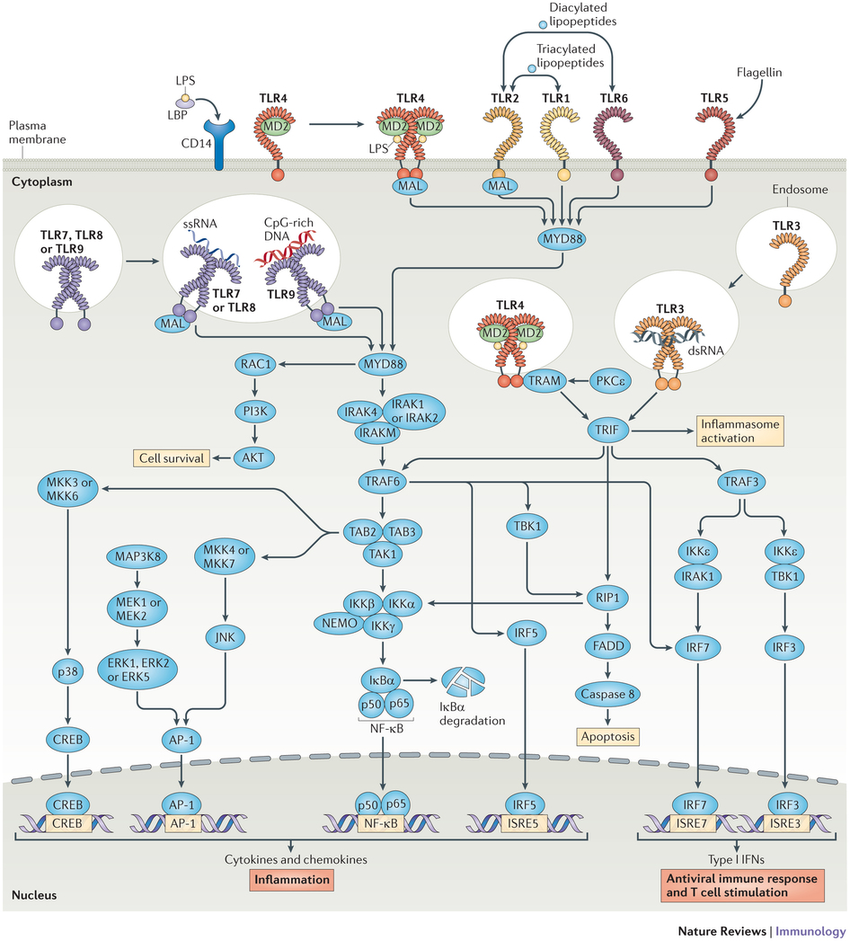
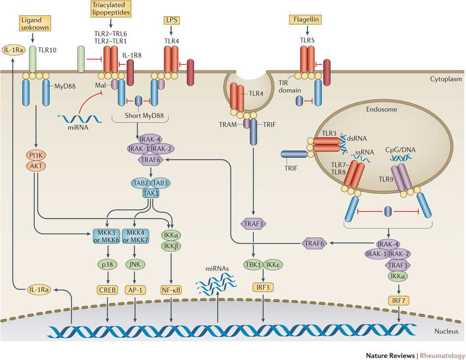
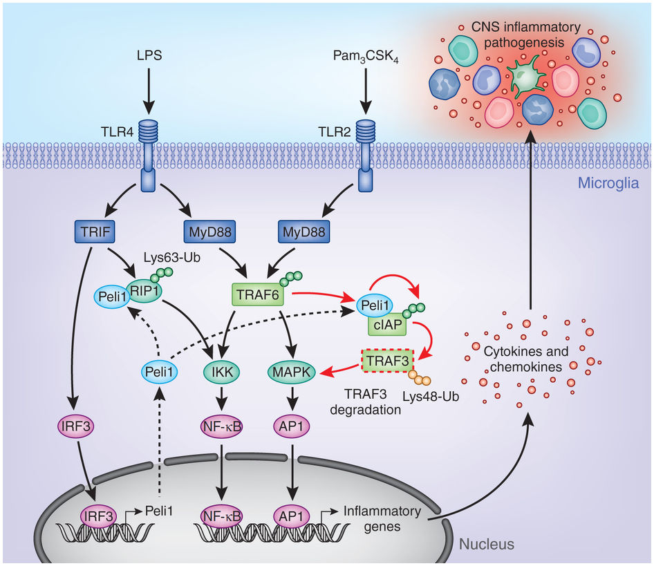

Toll-like receptors (TLRs) are a class of proteins that play a key role in the innate immune system. They are single, membrane-spanning, non-catalytic receptors usually expressed on sentinel cells such as macrophages and dendritic cells, that recognize structurally conserved molecules derived from microbes. Once these microbes have breached physical barriers such as the skin or intestinal tract mucosa, they are recognized by TLRs, which activate immune cell responses. The TLRs include TLR1, TLR2, TLR3, TLR4, TLR5, TLR6, TLR7, TLR8, TLR9, TLR10, TLR11, TLR12, and TLR13, though the latter two are not found in humans. They received their name from their similarity to the protein coded by the toll gene identified in Drosophila in 1985 by Christiane Nüsslein-Volhard.
The ability of immune system to recognize molecules that are broadly shared by pathogens is, in part, due to the presence of Immune receptors called toll-like receptors (TLRs) that are expressed on the membranes of leukocytes including dendritic cells, macrophages, natural killer cells, cells of the adaptive immunity (T and B lymphocytes) and non-immune cells (epithelial and endothelial cells, and fibroblasts). The binding of ligands - either in the form of adjuvant used in vaccinations or in the form of invasive moieties during times of natural infection - to the TLR marks the key molecular events that ultimately lead to innate immune responses and the development of antigen-specific acquired immunity. Upon activation, TLRs recruit adapter proteins (proteins that mediate other protein-protein interactions) within the cytosol of the immune cell in order to propagate the antigen-induced signal transduction pathway. These recruited proteins are then responsible for the subsequent activation of other downstream proteins, including protein kinases (IKKi, IRAK1, IRAK4, and TBK1) that further amplify the signal and ultimately lead to the upregulation or suppression of genes that orchestrate inflammatory responses and other transcriptional events. Some of these events lead to cytokine production, proliferation, and survival, while others lead to greater adaptive immunity. If the ligand is a bacterial factor, the pathogen might be phagocytosed and digested, and its antigens presented to CD4+ T cells. In the case of a viral factor, the infected cell may shut off its protein synthesis and may undergo programmed cell death (apoptosis). Immune cells that have detected a virus may also release anti-viral factors such as interferons. Toll-like receptors have also been shown to be an important link between innate and adaptive immunity through their presence in dendritic cells. Flagellin, a TLR5 ligand induces cytokine secretion on interacting with TLR5 on human T cells.
TLRs are a type of pattern recognition receptor (PRR) and recognize molecules that are broadly shared by pathogens but distinguishable from host molecules, collectively referred to as pathogen-associated molecular patterns (PAMPs). TLRs together with the Interleukin-1 receptors form a receptor superfamily, known as the "interleukin-1 receptor / toll-like receptor superfamily"; all members of this family have in common a so-called TIR (toll-IL-1 receptor) domain. Three subgroups of TIR domains exist. Proteins with subgroup 1 TIR domains are receptors for interleukins that are produced by macrophages, monocytes, and dendritic cells and all have extracellular Immunoglobulin (Ig) domains. Proteins with subgroup 2 TIR domains are classical TLRs, and bind directly or indirectly to molecules of microbial origin. A third subgroup of proteins containing TIR domains consists of adaptor proteins that are exclusively cytosolic and mediate signaling from proteins of subgroups 1 and 2.
TLRs are present in vertebrates, as well as in invertebrates. Molecular building blocks of the TLRs are represented in bacteria and in plants, and plant pattern recognition receptors are well known to be required for host defence against infection. The TLRs thus appear to be one of the most ancient, conserved components of the immune system. In recent years TLRs were identified also in the mammalian nervous system. Members of the TLR family were detected on glia, neurons and on neural progenitor cells in which they regulate cell-fate decision. It has been estimated that most mammalian species have between ten and fifteen types of toll-like receptors. Thirteen TLRs (named simply TLR1 to TLR13) have been identified in humans and mice together, and equivalent forms of many of these have been found in other mammalian species. However, equivalents of certain TLR found in humans are not present in all mammals. For example, a gene coding for a protein analogous to TLR10 in humans is present in mice, but appears to have been damaged at some point in the past by a retrovirus. On the other hand, mice express TLRs 11, 12, and 13, none of which is represented in humans. Other mammals may express TLRs that are not found in humans. Other non-mammalian species may have TLRs distinct from mammals, as demonstrated by TLR14, which is found in the Takifugu pufferfish.[11] This may complicate the process of using experimental animals as models of human innate immunity.
Drosophila melanogaster has only innate immune responses. Response to fungal or bacterial infection occurs through two distinct signalling cascades, one of which is toll pathway and the other is immune deficiency (IMD) pathway. The toll pathway is similar to mammalian TLR signalling, but unlike mammalian TLRs, toll is not activated directly by pathogen-associated molecular patterns (PAMPs). Its receptor ectodomain recognizes cleaved form of the cytokine Spätzle, which is secreted in the haemolymph as inactive dimeric precursor. Toll receptor shares the cytoplasmatic TIR domain with mammalian TLRs, but ectodomain and intracytoplasmatic tail are different. This difference might reflect a function of these receptors as cytokine receptors rather than PRRs. Toll pathway is activated by different stimuli, such as Gram positive bacteria, fungi and virulence factors. First, the Spätzle processing enzyme (SPE) is activated in response to infection and cleaves Spätzle. Cleaved Spätzle then binds to toll receptor and crosslinks its ectodomains. This triggers conformational changes in receptor resulting in signalling through toll. Signalling now is very similar to mammalian signalling through TLRs. Toll-induced signalling complex (TICS) is formed, comprising MyD88, Tube and Pelle (the orthologue of mammalian IRAK). Signal from TICS is then transduced to Cactus (homologue of mammalian IκB), phosphorylated Cactus is polyubiquitylated and degraded, allowing nuclear translocation of DIF (dorsal-related immunity facor; a homologue of mammalian NF-κB) and induction of transcription of genes for antimicrobial peptides (AMPs) such as Drosomycin.
TLR2 has also been designated as CD282 (cluster of differentiation 282).
TLR3 does not use the MyD88 dependent pathway. Its ligand is retroviral double-stranded RNA (dsRNA), which activates the TRIF dependent signalling pathway. To explore the role of this pathway in retroviral reprograming, knock down techniques of TLR3 or TRIF were prepared, and results showed that only the TLR3 pathway is required for full induction of target gene expression by the retrovirus expression vector. This retroviral expression of four transcriptional factors (Oct4, Sox2, Klf4 and c-Myc; OSKM) induces pluripotency in somatic cells. This is supported by study, which shows, that efficiency and amount of human iPSC generation, using retroviral vectors, is reduced by knockdown of the pathway with peptide inhibitors or shRNA knockdown of TLR3 or its adaptor protein TRIF. Taken together, stimulation of TLR3 causes great changes in chromatin remodeling and nuclear reprogramming, and activation of inflammatory pathways is required for these changes, induction of pluripotency genes and generation of human induced pluripotent stem cells (iPSC) colonies.
As noted above, human cells do not express TLR11, but mice cells do. Mouse-specific TLR11 recognizes uropathogenic E.coli and the apicomplexan parasite Toxoplasma gondii. With Toxoplasma its ligand is the protein profilin, but the ligand for E. coli is still not known. Recently the enteropathogen Salmonella spp. was found to have a ligand which is bound by TLR11. Salmonella is a gram-negative flagellated bacterium which causes food- and waterborne gastroenteritis and typhoid fever in humans. TLR11 in mouse intestine recognizes the flagellun protein flagellin, causing dimerization of the receptor, activation of NF-κB and production of inflammatory cytokines. TLR11 deficient mice (knockout mouse) are efficiently infected with orally administered Salmonella Typhi. S. Typhi does not normally infect mice, it is human obligatory pathogen that causes typhoid fever, which affects more than 20 million people and causes more than 220 thousand deaths per year. Because of this, studies were carried out and it was found that tlr-/- mice can be immunized against S. Typhi and they are used as an animal model for studying immune responses against this pathogen and for the development of vaccines, that could be possibly used in the future.
Toll-like receptors bind and become activated by different ligands, which, in turn, are located on different types of organisms or structures. They also have different adapters to respond to activation and are located sometimes at the cell surface and sometimes to internal cell compartments. Furthermore, they are expressed by different types of leucocytes or other cell types:
Receptor |
Ligand(s) |
Ligand location |
Adapter(s) |
Location |
Cell types |
|
|
|
|
|
|
multiple triacyl lipopeptides |
Bacterial lipoprotein |
MyD88/MAL |
cell surface |
|
|
multiple glycolipids |
Bacterial peptidoglycans |
MyD88/MAL |
cell surface |
|
|
multiple lipopeptides |
Bacterial peptidoglycans |
||||
multiple lipoproteins |
Bacterial peptidoglycans |
||||
Numerous others |
|||||
cell compartment |
|
||||
MyD88/MAL/TRIF/TRAM |
cell surface |
|
|||
several heat shock proteins |
Bacteria and host cells |
||||
host cells |
|||||
heparan sulfate fragments |
host cells |
||||
hyaluronic acid fragments |
host cells |
||||
Various opioid drugs |
|||||
Bacteria |
MyD88 |
cell surface |
|
||
multiple diacyl lipopeptides |
MyD88/MAL |
cell surface |
|
||
small synthetic compounds |
MyD88 |
cell compartment |
|
||
loxoribine (a guanosine analogue) |
|||||
single-stranded RNA |
RNA viruses |
||||
small synthetic compounds; single-stranded Viral RNA, phagocytized bacterial RNA(24) |
MyD88 |
cell compartment |
|
||
unmethylated CpG Oligodeoxynucleotide DNA |
Bacteria, DNA viruses |
MyD88 |
cell compartment |
|
|
unknown |
unknown |
? |
|||
MyD88 |
cell compartment[22] |
|
|||
TLR 12 |
MyD88 |
|
|||
TLR 13 |
bacterial ribosomal RNA sequence "CGGAAAGACC" |
Virus, bacteria |
MyD88, TAK-1 |
cell compartment |
|
Because of the specificity of toll-like receptors (and other innate immune receptors) they cannot easily be changed in the course of evolution, these receptors recognize molecules that are constantly associated with threats (i.e., pathogen or cell stress) and are highly specific to these threats (i.e., cannot be mistaken for self molecules that are normally expressed under physiological conditions). Pathogen-associated molecules that meet this requirement are thought to be critical to the pathogen's function and difficult to change through mutation; they are said to be evolutionarily conserved. Somewhat conserved features in pathogens include bacterial cell-surface lipopolysaccharides (LPS), lipoproteins, lipopeptides, and lipoarabinomannan; proteins such as flagellin from bacterial flagella; double-stranded RNA of viruses; or the unmethylated CpG islands of bacterial and viral DNA; and also of the CpG islands found in the promoters of eukaryotic DNA; as well as certain other RNA and DNA molecules. For most of the TLRs, ligand recognition specificity has now been established by gene targeting (also known as "gene knockout"): a technique by which individual genes may be selectively deleted in mice. See the table below for a summary of known TLR ligands.
The stereotypic inflammatory response provoked bm: 1y toll Like-Receptor activation has prompted speculation that endogenous activators of toll-like receptors might participate in autoimmune diseases. TLRs have been suspected of binding to host molecules including fibrinogen (involved in blood clotting), heat shock proteins (HSPs), HMGB1, extracellular matrix components and self DNA (it is normally degraded by nucleases, but under inflammatory and autoimmune conditions it can form a complex with endogenous proteins, become resistant to these nucleases and gain access to endosomal TLRs as TLR7 or TLR9). These endogenous ligands are usually produced as a result of non-physiological cell death. Different TLRs can recognize different antigens as listed below.
TLR 1: bacterial lipoprotein and peptidoglycans
TLR 2: bacterial peptidoglycans
TLR 3: double-stranded RNA
TLR 4: lipopolysaccharides
TLR 5: bacterial flagella
TLR 6: bacterial lipoprotein
TLR 7: single-stranded RNA, bacterial and viral
TLR 8: single-stranded RNA, bacterial and viral, phagocytized bacterial RNA.
TLR 9: CpG DNA
TLR 10: unknown
TLR 11: profilin from Toxoplasma gondii, also possibly uropathogenic bacteria
TLR 12: profilin from Toxoplasma gondii
TLR 13: bacterial ribosomal RNA
TLR 14: Act as inhibitor of bacterial cell wall
TLRs are believed to function as dimers. Though most TLRs appear to function as homodimers, TLR2 forms heterodimers with TLR1 or TLR6, each dimer having a different ligand specificity. TLRs may also depend on other co-receptors for full ligand sensitivity, such as in the case of TLR4's recognition of LPS, which requires MD-2. CD14 and LPS-Binding Protein (LBP) are known to facilitate the presentation of LPS to MD-2. A set of endosomal TLRs comprising TLR3, TLR7, TLR8 and TLR9 recognize nucleic acid derived from viruses as well as endogenous nucleic acids in context of pathogenic events. Activation of these receptor leads to production of inflammatory cytokines as well as type I interferons (interferon type I) to help fighting viral infection. The adapter proteins and kinases that mediate TLR signaling have also been targeted. In addition, random germline mutagenesis with ENU has been used to decipher the TLR signaling pathways. When activated, TLRs recruit adapter molecules within the cytoplasm of cells in order to propagate a signal. Four adapter molecules are known to be involved in signaling. These proteins are known as MyD88, Tirap (also called Mal), Trif, and Tram (TRIF-related adaptor molecule). TLR signaling is divided into two distinct signaling pathways, the MyD88-dependent and TRIF-dependent pathway.
The MyD88-dependent response occurs on dimerization of the TLR receptor, and is utilized by every TLR except TLR3. Its primary effect is activation of NFκB and Mitogen-activated protein kinase. Ligand binding and conformational change that occurs in the receptor recruits the adaptor protein MyD88, a member of the TIR family. MyD88 then recruits IRAK4, IRAK1 and IRAK2. IRAK kinases then phosphorylate and activate the protein TRAF6, which in turn polyubiquinates the protein TAK1, as well as itself in order to facilitate binding to IKK-β. On binding, TAK1 phosphorylates IKK-β, which then phosphorylates IκB causing its degradation and allowing NFκB to diffuse into the cell nucleus and activate transcription and consequent induction of inflammatory cytokines. 
Both TLR3 and TLR4 utilize the TRIF-dependent pathway, which is triggered by dsRNA and LPS, respectively. For TLR3, dsRNA leads to activation of the receptor, recruiting the adaptor TRIF. TRIF activates the kinases TBK1 and RIPK1, which creates a branch in the signaling pathway. The TRIF/TBK1 signaling complex phosphorylates IRF3 allowing its translocation into the nucleus and production of Interferon type I. Meanwhile, activation of RIPK1 causes the polyubiquitination and activation of TAK1 and NFκB transcription in the same manner as the MyD88-dependent pathway. TLR signaling ultimately leads to the induction or suppression of genes that orchestrate the inflammatory response. In all, thousands of genes are activated by TLR signaling, and collectively, the TLRs constitute one of the most pleiotropic yet tightly regulated gateways for gene modulation. TLR4 is the only TLR that uses all four adaptors. Complex consisting of TLR4, MD2 and LPS recruits TIR domain-containing adaptors TIRAP and MyD88 and thus initiates activation of NFκB (early phase) and MAPK. TLR4-MD2-LPS complex then undergoes endocytosis and in endosome it forms a signalling complex with TRAM and TRIF adaptors. This TRIF-dependent pathway again leads to IRF3 activation and production of type I interferons, but it also activates late-phase NFκB activation. Both late and early phase activation of NFκB is required for production of inflammatory cytokines. 
When microbes were first recognized as the cause of infectious diseases, it was immediately clear that multicellular organisms must be capable of recognizing them when infected and, hence, capable of recognizing molecules unique to microbes. A large body of literature, spanning most of the last century, attests to the search for the key molecules and their receptors. More than 100 years ago, Richard Pfeiffer, a student of Robert Koch, coined the term "endotoxin" to describe a substance produced by Gram-negative bacteria that could provoke fever and shock in experimental animals. In the decades that followed, endotoxin was chemically characterized and identified as a lipopolysaccharide (LPS) produced by most Gram-negative bacteria. This lipopolysaccharide is an integral part of the gram-negative membrane and is released upon destruction of the bacterium. Other molecules (bacterial lipopeptides, flagellin, and unmethylated DNA) were shown in turn to provoke host responses that are normally protective. However, these responses can be detrimental if they are excessively prolonged or intense. It followed logically that there must be receptors for such molecules, capable of alerting the host to the presence of infection, but these remained elusive for many years. Toll-like receptors are now counted among the key molecules that alert the immune system to the presence of microbial infections. They are named for their similarity to toll, a receptor first identified in the fruit fly Drosophila melanogaster, and originally known for its developmental function in that organism. In 1996, toll was found by Jules A. Hoffmann and his colleagues to have an essential role in the fly's immunity to fungal infection,[37] which it achieved by activating the synthesis of antimicrobial peptides. The plant homologs were discovered by Pamela Ronald in 1995 (rice XA21)[38] and Thomas Boller in 2000 (Arabidopsis FLS2). The first reported human toll-like receptor was described by Nomura and colleagues in 1994, mapped to a chromosome by Taguchi and colleagues in 1996. Because the immune function of toll in Drosophila was not then known, it was assumed that TIL (now known as TLR1) might participate in mammalian development. However, in 1991 (prior to the discovery of TIL) it was observed that a molecule with a clear role in immune function in mammals, the interleukin-1 (IL-1) receptor, also had homology to drosophila toll; the cytoplasmic portions of both molecules were similar. In 1997, Charles Janeway and Ruslan Medzhitov showed that a toll-like receptor now known as TLR4 could, when artificially ligated using antibodies, induce the activation of certain genes necessary for initiating an adaptive immune response.[43] TLR 4 function as an LPS sensing receptor was discovered by Bruce A. Beutler and colleagues.[44] These workers used positional cloning to prove that mice that could not respond to LPS had mutations that abolished the function of TLR4. This identified TLR4 as one of the key components of the receptor for LPS.